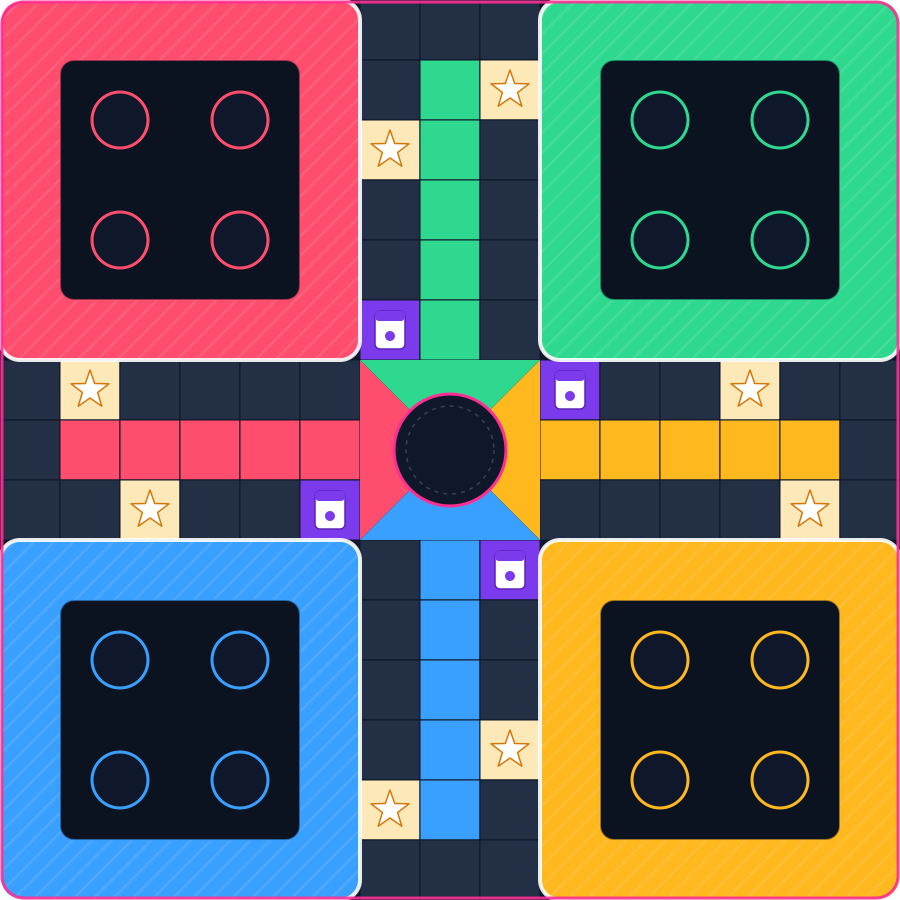
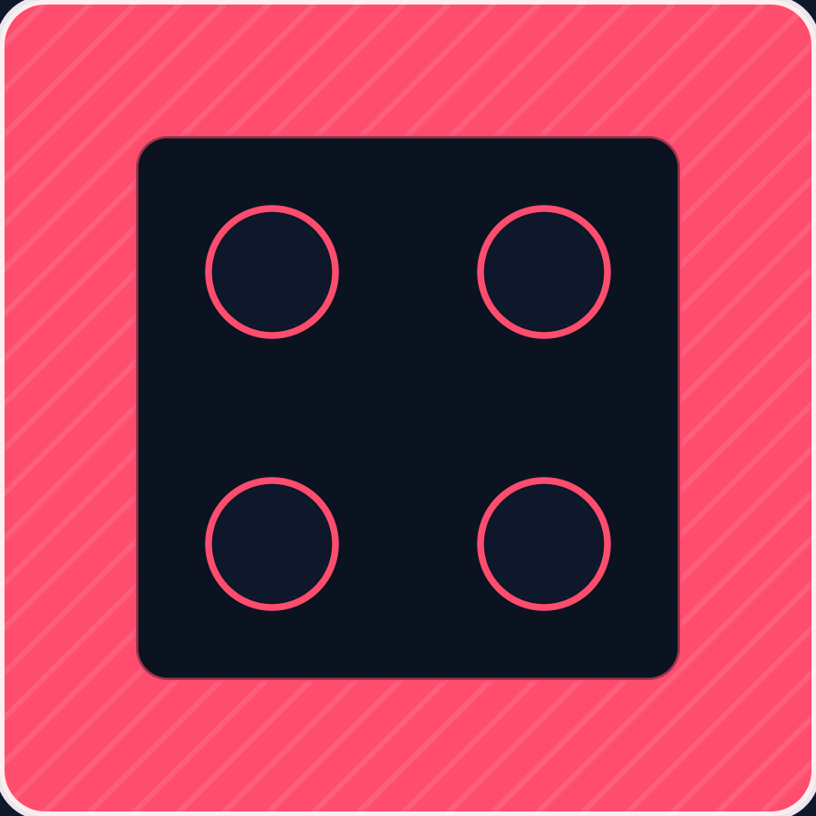
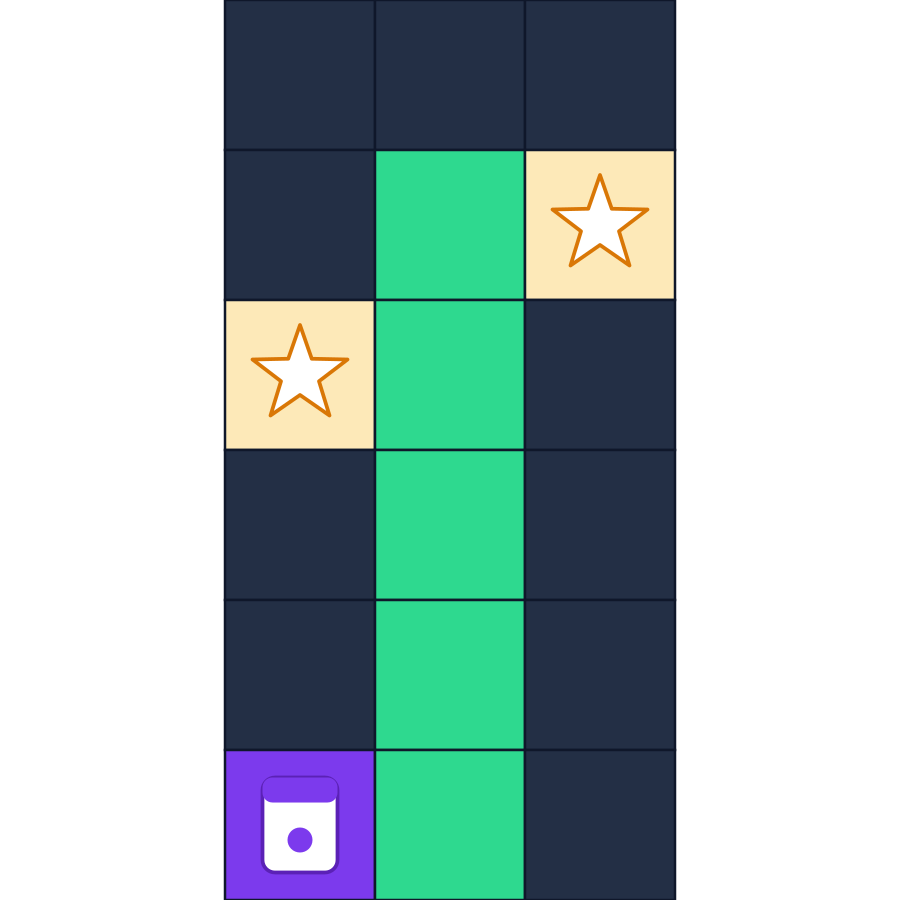
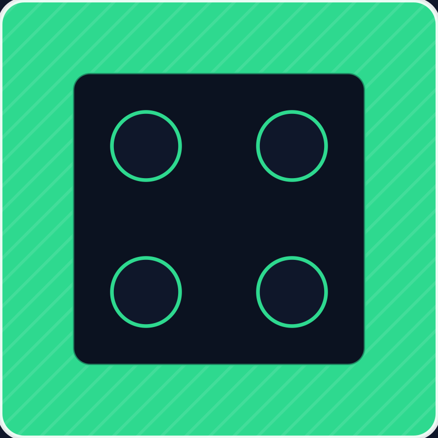
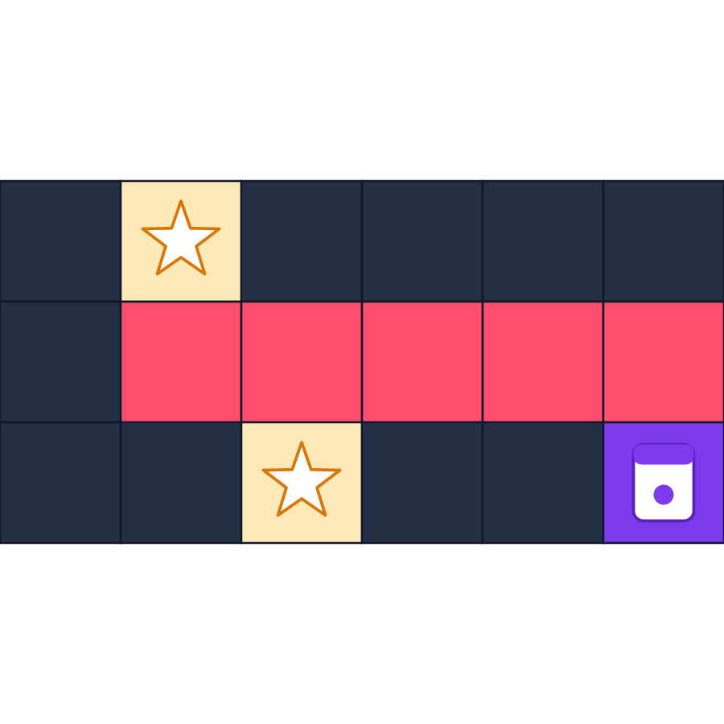
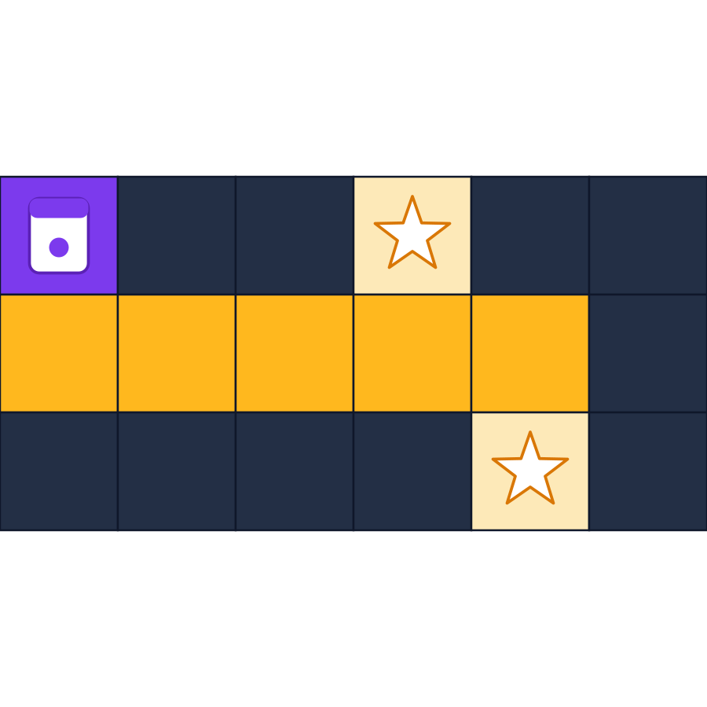
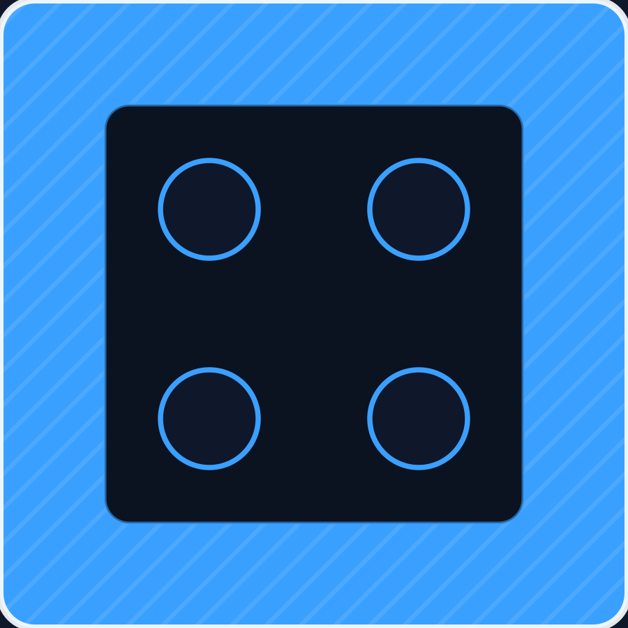
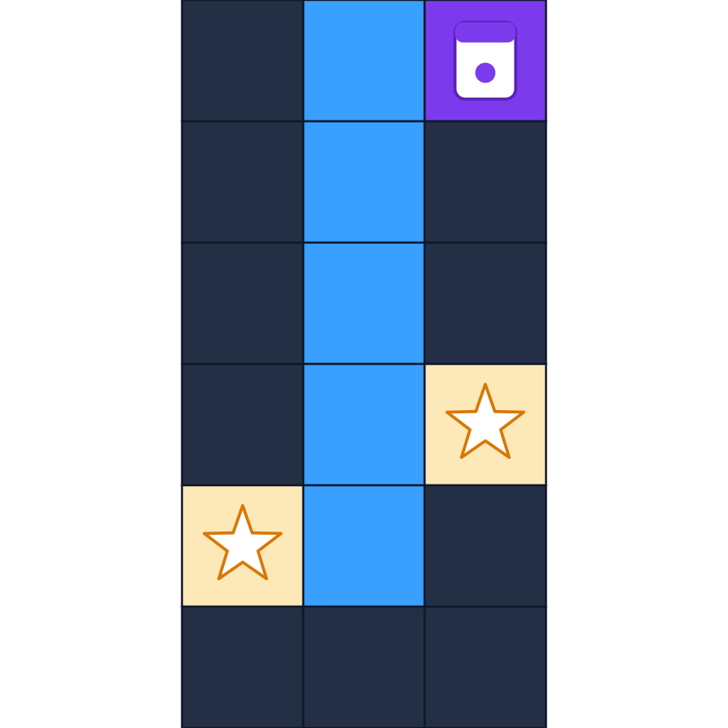
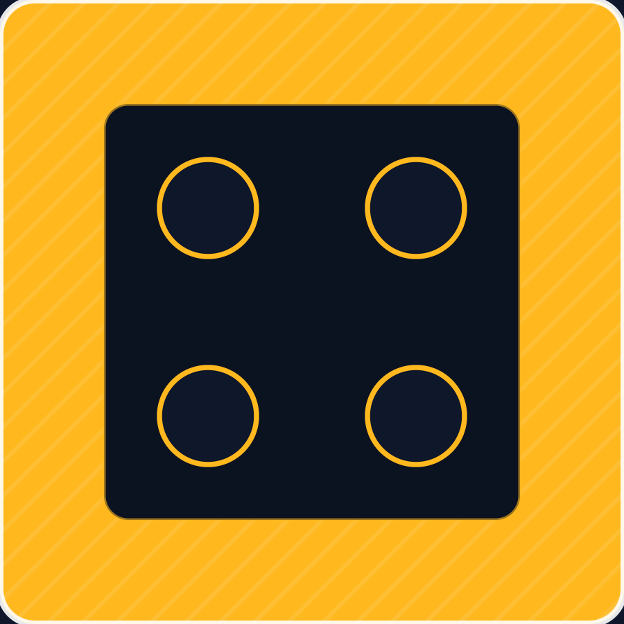

Folder ini berisi aset baru yang digambar ulang sebagai SVG (bukan potongan JPEG lama).
Papan di bawah adalah board-full.svg sebagai latar, dengan 16 pion di posisi base
dan 1 dadu di tengah — semuanya elemen HTML terpisah di atas latar, bukan menempel di SVG papan.
Jadi token bisa dipindah-pindah tanpa merusak latar, dan tidak ada pion/dadu ganda.

Posisi pion base di demo ini adalah SLOT TAMPIL simetris (bukan pusat sel grid engine): yard 0–360, kotak dalam 60–300 (konsentris, margin 60), slot di 120 dan 240 relatif yard (13.333% dan 26.667% dari papan). Lihat TASK_INSTRUCTION.md bagian Ludo Jahat untuk pemetaan lengkap. Jika pion meleset dari lingkaran slot, itu cacat yang harus dilaporkan — di screenshot cek, pion harus tepat di tengah lingkaran.
Jika ada garis sambungan yang meleset/ganda di antara part, itu akan terlihat di sini. Part-part ini memakai koordinat papan yang sama dengan board-full, tanpa stroke luar part.








Catatan geometri: kolom home 6 petak per warna di spesifikasi — 5 petak pertama adalah sel grid, petak ke-6 menyatu dengan segitiga tengah warna yang sama (papan klasik: 144 yard + 52 jalur + 20 home + 9 tengah = 225 sel). Sel home ke-6 itu tidak digambar sebagai kotak terpisah, melainkan sebagai segitiga tengahnya.